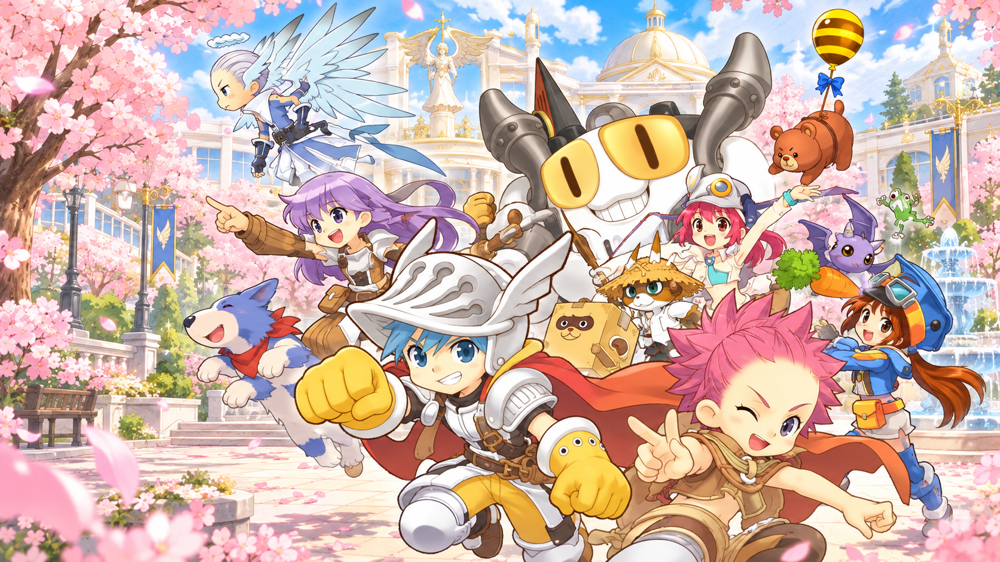
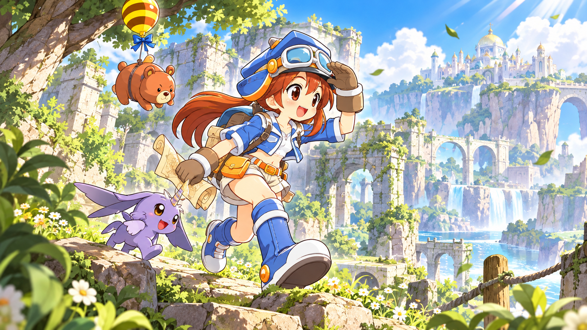
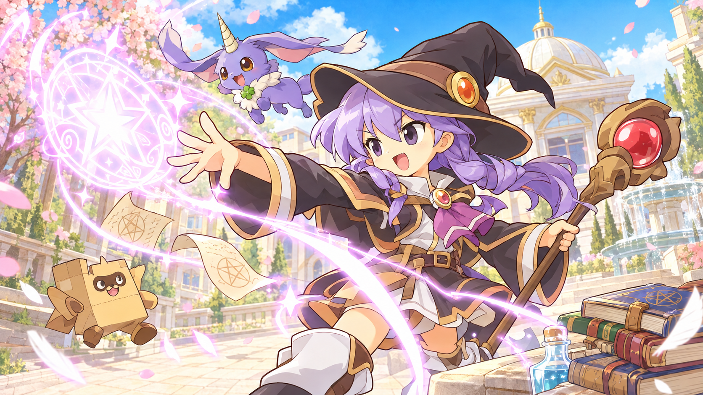
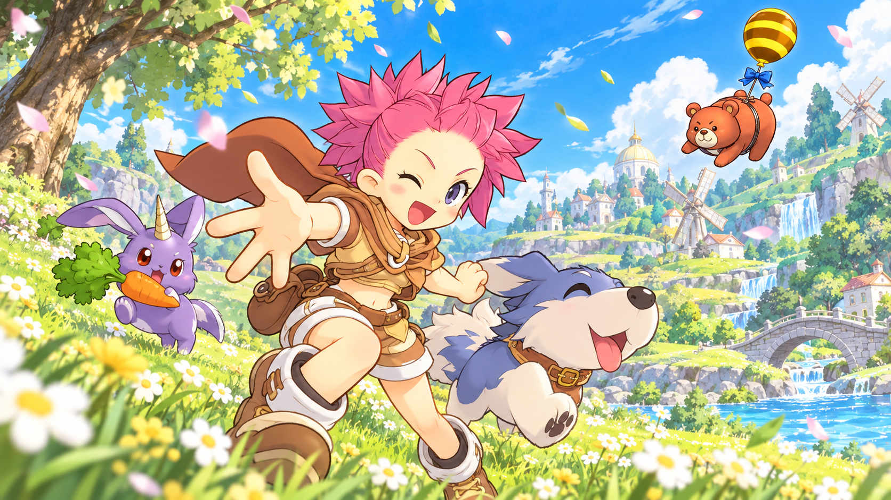
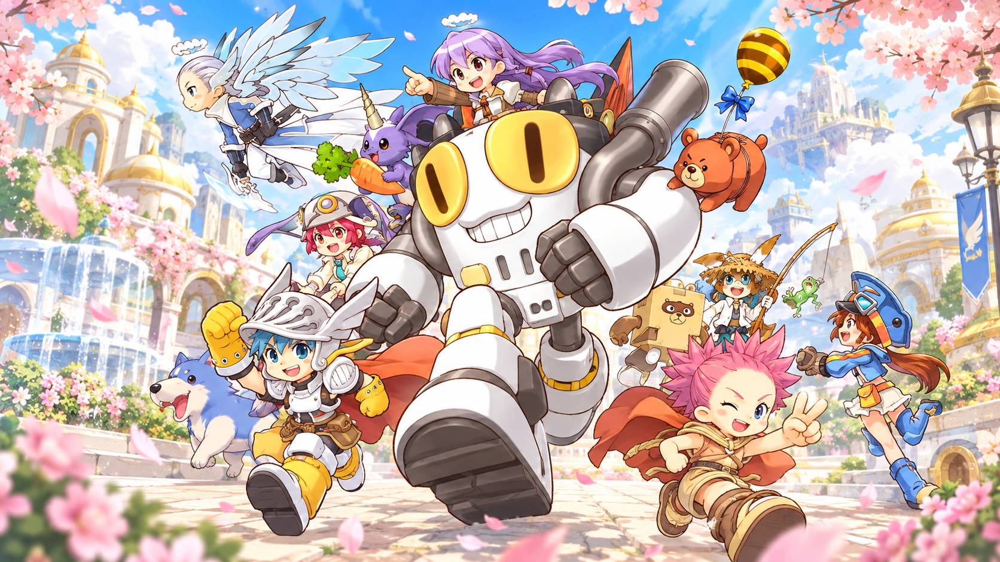

Un lugar al que volver
La academia, sus plazas y sus encuentros: el comienzo de una historia que se escribe entre amigos.

BIENVENIDO A ANGELS ONLINE
Vuelve a sentir la magia de la aventura. Reúne a tus amigos y descubre un universo lleno de personajes inolvidables.
La aventura te espera.
Actualizaciones, avisos y novedades de nuestro servidor.
El encanto de Angels Online cobra vida entre academias, criaturas extraordinarias y caminos por explorar. Cada encuentro puede ser el inicio de una nueva historia.
Espadas, magia y un espíritu aventurero. Adéntrate en un mundo de fantasía donde el siguiente horizonte siempre invita a seguir adelante.
UNA HISTORIA QUE SE VIVE EN COMPAÑÍACada camino guarda una historia. Deja que la curiosidad sea tu brújula.

La academia, sus plazas y sus encuentros: el comienzo de una historia que se escribe entre amigos.
Paisajes luminosos, rincones misteriosos y la emoción de descubrir qué hay al otro lado del sendero.
Las mejores anécdotas nacen cuando una pequeña escapada se convierte en una gran aventura.
Descubre los rostros que dan vida a este universo de fantasía.
Dar el primer paso, afrontar lo desconocido y seguir adelante junto a tus compañeros.

Ver posibilidades donde otros ven misterios y encontrar algo extraordinario en cada rincón.

Elegir un nuevo horizonte, recorrer el sendero y disfrutar de todo lo que sucede en el camino.
Criaturas encantadoras y compañeros fuera de lo común llenan de personalidad el mundo de Angels Online.
Entre personajes curiosos y encuentros inesperados, siempre hay un motivo más para sonreír durante el viaje.

Elige el nombre con el que entrarás al juego. Es gratis y solo toma un momento.
Aquí no se pide contraseña: la primera vez que inicies sesión en el juego con este usuario, la contraseña que escribas en ese momento queda guardada como la tuya.
Un pequeño recorrido para saber por dónde comenzar.
Usa el botón «Descargar juego» de la portada cuando el cliente del servidor esté disponible.
Sigue las instrucciones incluidas con el cliente y revisa los requisitos que publique el servidor.
Abre el juego y sigue las indicaciones de acceso que acompañen al lanzamiento.
El enlace del cliente y los detalles de acceso se anunciarán próximamente.
Respuestas para preparar tu llegada.
En el único botón «Descargar juego», situado en la portada. Mientras el cliente no esté disponible, mostrará un aviso.
La fecha de apertura todavía no está anunciada en esta página. Aquí se actualizarán los detalles cuando estén confirmados.
Reserva tu nombre de usuario en la sección «Crear cuenta» de esta página. No pedimos contraseña ahí: la defines tú mismo la primera vez que inicias sesión en el juego con ese usuario, y esa es la que se guarda para las siguientes veces.
Los requisitos de sistema y el espacio necesario se comunicarán con la versión del cliente que se distribuya.
No. Es una web de comunidad para este servidor, sin afiliación con el editor del juego.
Nuevas amistades. Viejos recuerdos. Una aventura por comenzar.